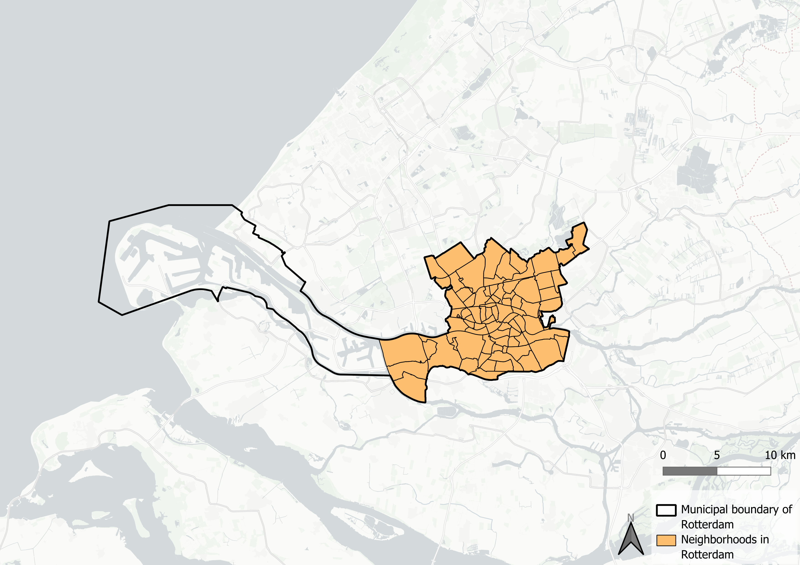
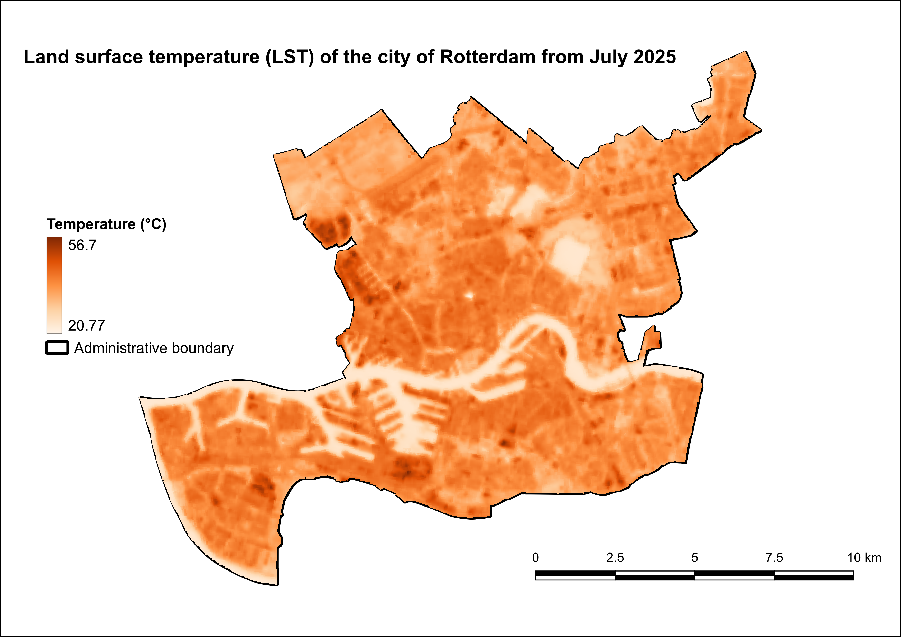
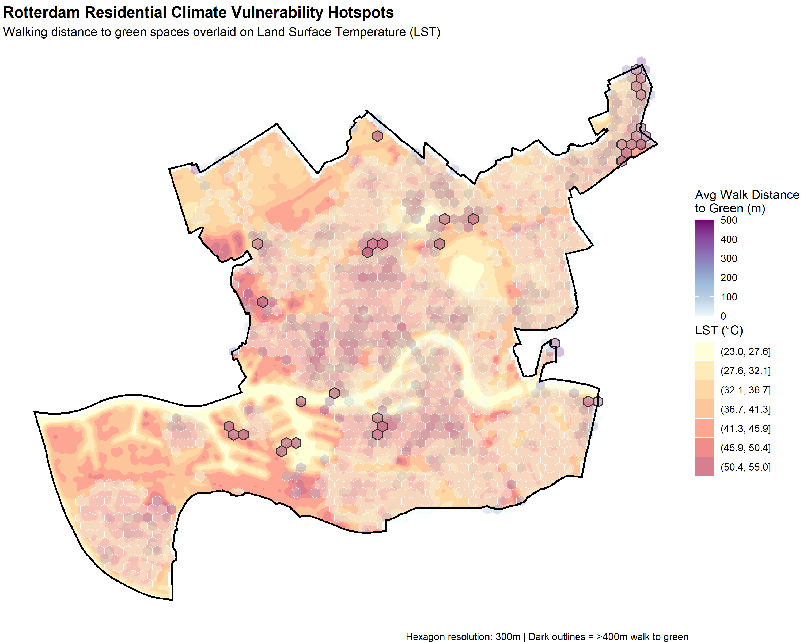
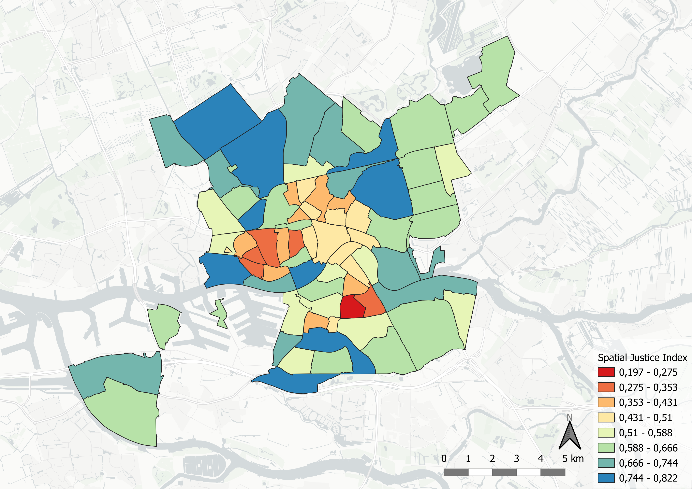
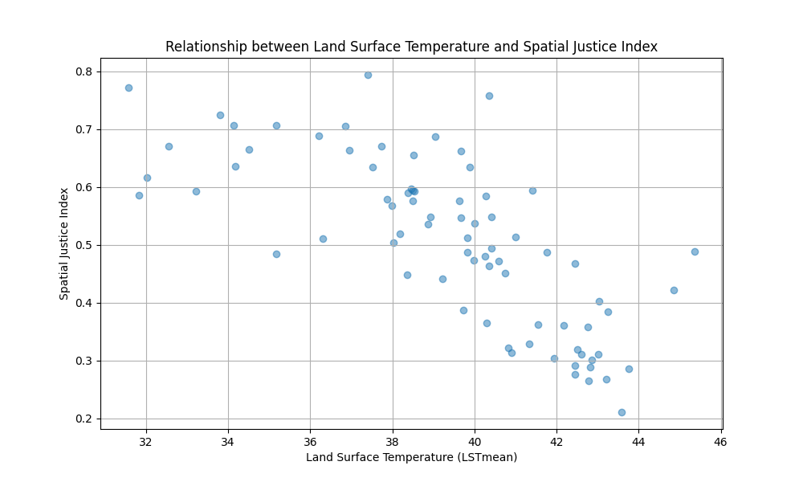
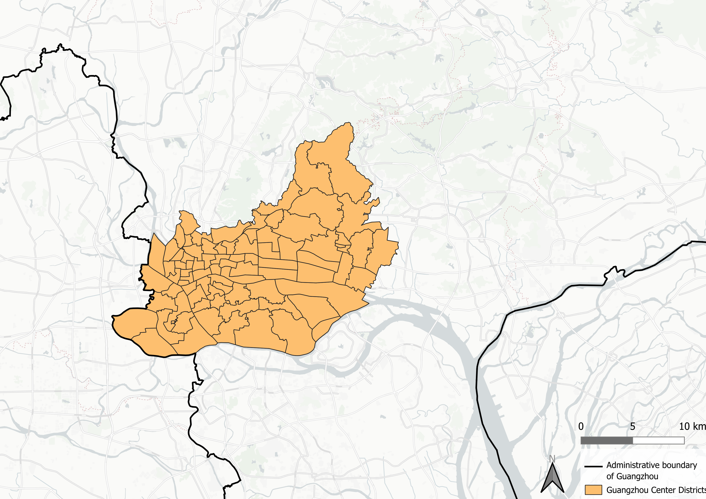
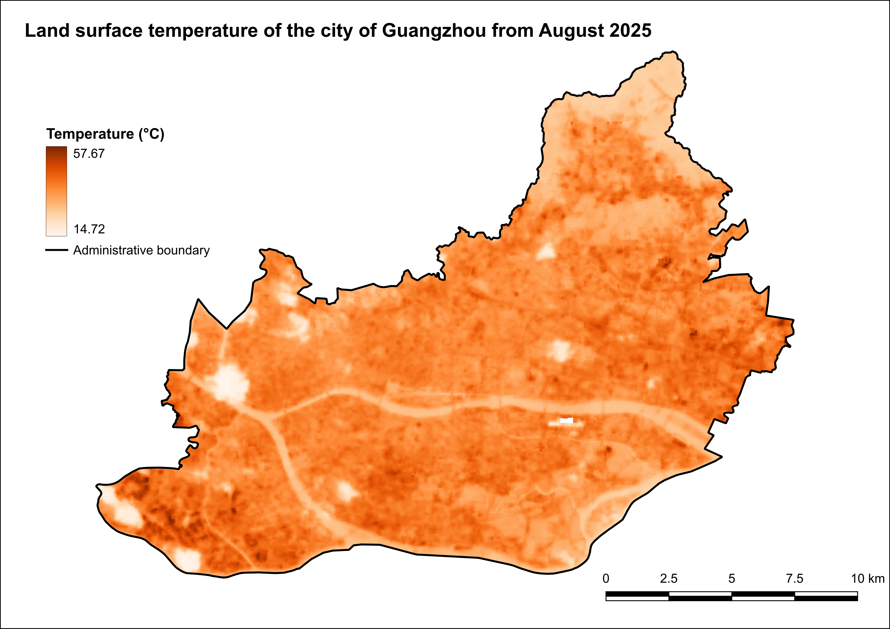
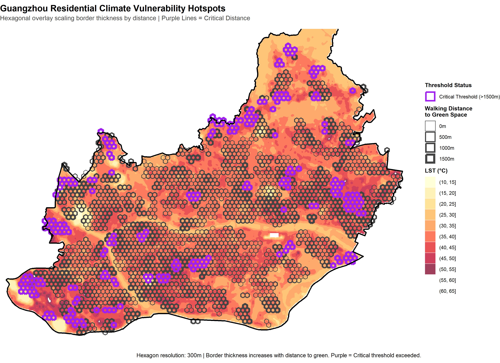
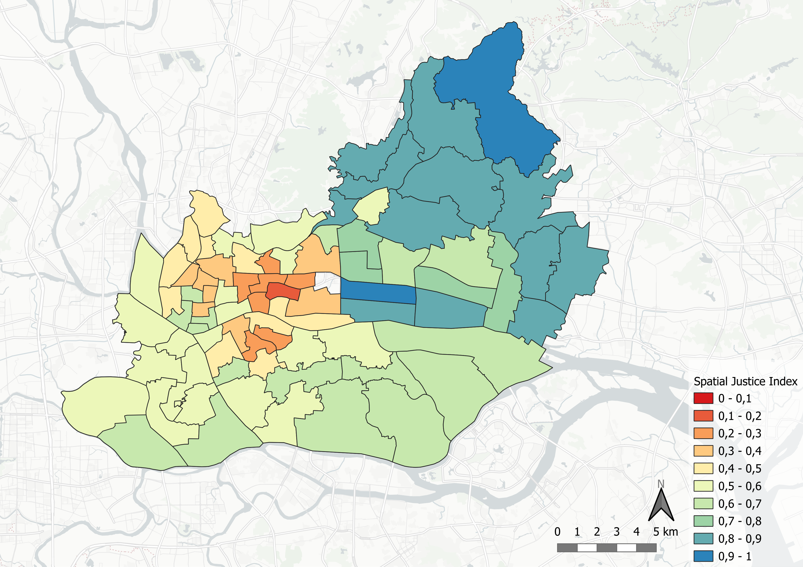
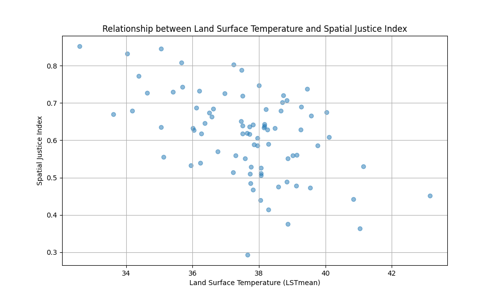

Effect of Green Infrastructure on Spatial Justice and Urban Climate
Project report of Group B
Introduction
Urban environments are increasingly vulnerable to the impacts of climate change, particularly the intensification of the Urban Heat Island (UHI) effect. Wong et al. (2016) suggest that urban thermal stress is often unevenly distributed across municipal populations, with spatial justice metrics -such as proximity to cooling urban green spaces- aligning with socio-economic disparities. In many metropolitan contexts, lower-income or socially vulnerable populations are often concentrated within dense, highly paved urban cores, potentially exposing them to elevated thermal conditions and associated health risks (Wong et al. 2016). This intersection of micro-climate variation and social equity forms an important challenge for modern urban planning.
As municipal governments seek to adapt, the expansion of urban green infrastructure has emerged as a strategy to mitigate the UHI effect and establish cooling zones. However, assessing whether these interventions genuinely protect vulnerable communities requires a comparative analysis across different urban environments. This research examines the inequality in climate impact between two cities operating on vastly different geographical, demographic, and administrative scales: Rotterdam, a compact European port city, and Guangzhou, a large, dense subtropical city. By comparing these distinct urban frameworks, this study investigates whether the link between socio-economic vulnerability and high heat exposure functions as a universal urban pattern, or if it varies significantly based on local climate zones and governance models. Ultimately, this report aims to evaluate the systemic equity of current climate adaptation strategies by addressing the following primary research question:
How does the relationship between urban green infrastructure allocation and socio-economic vulnerability vary between Rotterdam and Guangzhou?
In order to get a clear answer to this question, the primary query is divided into two sub-questions;
- How do the physical and socio-economic criteria of spatial justice correlate with the Land Surface Temperature in each city?
- Which neighborhoods exhibit the highest deficit in environmental amenities relative to their vulnerability index, identifying them as priority zones for green adaptation?
This report will first discuss the methodology used to perform the research in both study areas. Secondly, the results for Rotterdam and Guangzhou are presented individually. The subsequent discussion section covers limitations of the data, addresses spatial uncertainties, and directly contrasts findings between the two target cities. Ultimately, the research question is answered in the concluding section, alongside recommendations for equitable urban planning.
Methodology
To evaluate the relationship between urban green infrastructure allocation and socio-economic vulnerability, this study bridges urban climate and social equity by quantifying the land surface temperature (LST) distribution alongside a Spatial Justice Index, which includes several metrics of spatial justice. The methodology is structured as follows: outlining the overarching analytical workflow, detailing data sources, defining the technical metrics, and intergrating these dimensions through a Multi-Criteria Decision Analysis (MCDA) framework.
As Bartesaghi-Koc et al. (2020) describe, the UHI effect is a phenomenon where urban areas experience higher temperatures than their rural surroundings. This is driven by the built environment, which absorbs and retains heat, and is exacerbated by a lack of urban vegetation, which reduces potential cooling from evapotranspiration and shading. Consequently, the presence of green infrastructure is a key factor in mitigating UHI (Bartesaghi-Koc et al. 2020).
According to Dadashpoor and Dehghan (2025), spatial justice concerns the fair distribution of resources, services, and environmental benefits across urban space. Therefore, spatial justice can be measured in multiple ways, including socio-economic indicators, such as income, education, and employment, as well as access to green spaces. This study focuses on socio-economic aspects and access to green spaces which can be connected to the LST distribution. By combining these metrics through a Multi-Criteria Decision Analysis (MCDA) framework, the relation between urban climate and spatial justice can be evaluated and compared for Rotterdam and Guangzhou.
Analytical Workflow and Comparative Framework
To ensure a structured and symmetrical cross-city comparison, the analysis for both Rotterdam and Guangzhou follows an identical three-phase analytical pipeline:
- Thermal and Physical Amenity Correlation: First, high-resolution Land Surface Temperature (LST) distributions are mapped and directly correlated against physical walking distances to urban green spaces. This establishes the baseline relationship between micro-climate intensity and physical access in each urban context.
- Index Calibration: Second, the Spatial Justice Index (SJI) is generated. For Rotterdam, two variations are calculated -a complete model leveraging the full depth of available Dutch socio-economic data, and a simplified model restricted to baseline indicators. For Guangzhou, the simplified model is executed using harmonized proxies to ensure exact cross-city compatability.
- Synthesis and Equity Mapping: Finally, the generated Spatial Justice Indices are cross-analyzed against the LST layers. This synthesis produces final overlay maps that explicitly identify “priority zones” -neighborhoods where high socio-economic vulnerability, structural green deficits, and elevated thermal stress intersect.
Data Sources
For both Rotterdam and Guangzhou, the analysis relies on a combination of spatial and socio-economic datasets. The LST data for both cities was obtained by downloading Landsat 8/9 Collection 2 Level-2 Surface Temperature satellite imagery (ST_B10) using the USGS Earth Explorer (USGS 2026).
For Rotterdam, socio-economic data was primarily sourced from the Leefbaarometer 2024 (Ministerie van Binnenlandse Zaken en Koninkrijksrelaties 2026) and CBS Buurtgegevens (Centraal Bureau voor de Statistiek 2026) , which provide comprehensive neighborhood-level information on physical livability, social cohesion, housing conditions, and demographic characteristics. These datasets are complemented by the high-resolution Land Surface Temperature (LST) data, enabling precise mapping of urban heat distribution. Because distance to green is an important indicator in Spatial Justice, a network analysis was performed using building data from the BAG, obtained via the PDOK plugin in QGIS (Duivenvoorde 2026), and road networks and green areas from OpenStreetMap (OSM) (OpenStreetMap contributors 2017).
For Guangzhou, data acquisition posed a greater challenge due to limited availability of granular socio-economic information. Consequently, the analysis utilized OSM data to extract residential land use and green space locations, supplemented by pedestrian network data to assess accessibility. LST data for Guangzhou was obtained from remote sensing sources, ensuring methodological consistency with the Rotterdam dataset. Population distribution for Guangzhou was modeled using open-source data from “WorldPop.org” (WorldPop 2026). However, because WorldPop is a gridded global dataset, it may lack the localized accuracy of official census products like the Dutch CBS data. Despite these variations in source material, the integration of these datasets allows for a robust cross-city comparison of spatial justice and urban climate vulnerability.
To ensure a valid comparative analysis between the two distinct urban contexts, uniform metrics were applied to both cities. Because data availability for Rotterdam significantly outpaced that of Guangzhou, the scope of the Rotterdam analysis was intentionally restricted to align with the indicators available for Guangzhou. Omitting these higher-resolution variables for Rotterdam represents a deliberate methodological limitation of this study, accepted in favor of cross-city comparability.
Metrics
To ensure a robust comparative spatial analysis between Rotterdam and Guangzhou, a standardized set of metrics was established. By aligning the spatial scale, temporal context, environmental hazard variables, and socio-economic vulnerability indicators, the analytical pipeline ensures that the divergent urban fabrics of both cities are evaluated through a mathematically and conceptually consistent framework. The core metrics and their technical parameters are detailed below.
Scale
A map scale of 1:110,000 for both Rotterdam and Guangzhou’s city extents was applied. Standardizing the spatial extent at this scale harmonizes the comparative analysis, ensuring that density, spatial patterns, and network distances are observed and measured at an identical resolution across both urban contexts.
Land Surface Temperature (LST)
To assess the urban micro-climate and isolate localized thermal stress, Land Surface Temperature (LST) maps were generated using satellite imagery. Imagery was acquired from July 2025 for Rotterdam and August 2025 for Guangzhou. These periods were selected to capture the thermal landscape during the hottest months of the year, thereby measuring the impact of LST at its peak intensity. The selection of specific imagery dates was dependent on satellite revisit cycles and the availability of cloud-free scenes with an unobstructed view of the respective city boundaries.
The spatial processing began by clipping the raster datasets to the study area boundary polygons using an administrative mask layer. To convert the raw Digital Number (DN) values from the thermal infrared sensors into meaningful temperature readings, the standard USGS scale factor was applied to calculate top-of-atmosphere brightness temperature in Kelvin: \[T_{K}={DN * 0.0341802 + 149.0}\]
Subsequently, the Kelvin values were converted to degrees Celsius (\(T_{∘C}\)) to facilitate intuitive interpretation using the standard thermodynamic conversion formula: \[T_{∘C}= {T_{K} - 273.15}\]
Distance to green areas
To model environmental accessibility, localized green spaces were aggregated into a unified destination layer for each city. These destination assets were then coupled with municipal building footprints and pedestrian road network layers to initialize a true network analysis. The algorithmic configuration and network construction mechanics are detailed further within the “Socio-Economic Vulnerability” subsections of the respective city case studies.
Spatial Justice Metrics
To operationalize socio-economic vulnerability within the Spatial Justice Index (SJI), several demographic and housing indicators were selected. These metrics focus on disadvantaged populations, specifically isolating the proportion of elderly residents, households relying on social welfare benefits, individuals with non-Dutch or migrant backgrounds, and the spatial distribution and share of rental housing. The specific data processing, normalization, and aggregation steps required to construct these metrics are detailed within the “Socio-Economic Vulnerability” subsections of respective Rotterdam and Guangzhou case studies later in the report.
Multi-Criteria Decision Analysis
Multi-Criteria Decision Analysis (MCDA) is a structured evaluation framework used to solve complex decision and spatial planning problems that involve multiple criteria. As highlighted in a review by B. Huang et al. (2011), MCDA has seen accelerating growth in environmental and strategic planning because it provides a transparent, technically valid framework to balance technical data against diverse stakeholder values. The methodology relies on decomposing a complex problem into measurable criteria, normalizing heterogeneous data to a common scale, applying explicit weights that reflect strategic priorities, and aggregating the results to rank or score geographic alternatives.
Evaluating spatial justice and urban climate adaptation cannot be achieved through a single metric; it requires balancing socio-economic vulnerabilities against environmental and physical urban characteristics. According to Dadashpoor and Dehghan (2025), spatial justice is an inherently multidimensional, dynamic concept encompassing categories such as equal access, equity, diversity, and public participation. To analyze these intersecting dimensions simultaneously, a flexible, integrative approach is necessary. MCDA allows for this integration by transforming diverse datasets into a uniform, dimensionless scale. Furthermore, by embedding priorities into the mathematical model via weighting, researchers can directly reflect the equity and need-based distribution dimension emphasized by Dadashpoor and Dehghan (2025), ensuring that final spatial interventions prioritize structurally disadvantaged or vulnerable urban areas.
The operational workflow for the Spatial Justice Index was executed in four sequential phases: criteria selection, data normalization, weight assignment, and aggregation. To construct a comprehensive Spatial Justice Index, MCDA provided the mechanisms to normalize all heterogeneous indicators and assign strategic weights to each criterion.
Reproducibility
To ensure the transparency, verifiability, and replicability of this comparative study, all analytical scripts have been made openly available, and the primary data sources are fully documented. The empirical analysis relies entirely on open-access spatial and alphanumeric datasets. Researchers wishing to replicate this study can acquire the baseline data from the data sources linked in Section 2.2. Some of these datasets are already available in the /data folder of the repository.
The analytical pipeline is executed entirely via open-source R scripts, organized within the /code folder of the repository. Raw source data not pre-packaged in the repository should be downloaded first and formatted to match the expected directory inputs.
Spatial Justice Index (SJI) Calculation: The R scripts execute the normalization, weighting, and multi-criteria aggregation of the spatial justice indicators. To maintain analytical rigor while ensuring cross-city validity, the codebase provides two separate tracks: a script for the complete, high-resolution SJI of Rotterdam, and a simplified SJI script calibrated specifically to match the baseline data indicators common to both Rotterdam and Guangzhou.
Network Analysis and Visualization: A separate network analysis script ingests the residential layers and green space polygons. It computes walking distances along the extracted pedestrian infrastructure, aggregates these accessibility metrics into a uniform hexagonal grid, and automatically plots the resulting deficit zones directly over the Land Surface Temperature (LST) raster layer.
Results: Rotterdam Case Study
The analysis begins with Rotterdam, a compact European port city characterized by distinct post-war urban planning, high industrial infrastructure, and a maritime climate. This section provides a localized evaluation of how spatial justice metrics intersect with urban climate vulnerability across the municipality.
A significant advantage of examining the Dutch urban context is the broad availability and high granularity of open-source data. Databases such as the Centraal Bureau voor de Statistiek (CBS) and the Leefbaarometer provide extensive, neighborhood-level insights into physical livability, social cohesion, demographics, and socioeconomic status. This rich data landscape enables a highly detailed evaluation of spatial equity.
However, applying this data across the entire administrative boundary of Rotterdam requires boundary delimitation. The extensive Port of Rotterdam area, while geographically vast, contains heavily industrialized fabric with little to no permanent residential population. Including these industrial zones would skew the statistical distributions of both the Land Surface Temperature (LST) and socio-economic vulnerability indices, rendering them unrepresentative of actual civilian exposure. Consequently, this study restricts its spatial scope to Rotterdam’s residential and central urban neighborhoods (Figure 1), to ensure an accurate reflection of human-centric environmental exposure.

The initial mapping of Land Surface Temperature (LST) across Rotterdam provides a preliminary indication of the city’s thermal distribution (Figure 2). At first glance, light orange areas appear to align mostly with water bodies and larger green spaces, suggesting lower surface temperatures. In contrast, the darker regions correspond visually with industrial sectors and the inner port areas, pointing to them as potential primary contributors to elevated LST values.

Climate Vulnerability
To map localized climate vulnerability, this analysis intersects physical exposure to extreme heat with the availability of environmental mitigation measures. Specifically, the Land Surface Temperature (LST) is compared against the pedestrian walking distance to urban green spaces, which serve as crucial cooling amenities during extreme heat events. Examining this relationship reveals whether structural deficits in urban cooling infrastructure are concentrated in the areas facing the highest thermal stress.
The spatial workflow establishes these metrics by executing a pedestrian network analysis. Residential building footprints (woonfunctie) are isolated to serve as origin nodes, which are then routed along the local road and pedestrian network layers to calculate the walking distance to the nearest designated green space destination. To ensure a standardized, continuous unit of analysis, the network routing results are aggregated into a 150-meter hexagonal grid, calculating the average walking distance from the enclosed buildings to the nearest cool space. Concurrently, the satellite-derived LST raster map is re-projected and cropped to match the city’s residential extent.
Based on the spatial distributions shown in Figure 3, there is no clear correlation between physical distance to green spaces and LST in Rotterdam. The most vulnerable residential clusters in terms of green space accessibility are distributed across both high-heat and moderate-temperature urban areas. This indicates that poor access to cooling spaces is a structural issue that is not exclusively isolated to the absolute hottest neighborhoods in the city of Rotterdam.

Socio-Economic Vulnerability
To evaluate and visualize the distribution of spatial equity across Rotterdam’s neighborhoods, we developed a composite Spatial Justice Index. This index combines multiple dimensions of urban life, ranging from the physical environment to socio-economic status, into a single, standardized metric. Below is a breakdown of the indicators selected, the reasoning behind their inclusion, and the methodology used to combine them.
While the Rotterdam case study utilizes a multi-dimensional index built from comprehensive national registry data (Leefbaarometer and CBS), reproducing this exact model for Guangzhou was not feasible due to sparse local data availability. To ensure a reliable comparative analysis, we later adapted our approach by constructing a streamlined Spatial Justice Index tailored to the core socio-economic metrics consistently available for Guangzhou.
Selected Indicators and Reasoning
We selected seven key indicators derived from the Leefbaarometer 2024 and CBS Buurtgegevens. These indicators were chosen because they capture both the structural quality of the neighborhoods and the socio-economic vulnerability of their residents. They are divided into three main categories:
1. Urban Quality and Well-Being
These indicators capture the baseline structural and social conditions of the neighborhood. In an equitable city, high-quality urban environments should be distributed uniformly, rather than concentrated in affluent districts.
- Physical Livability Score: Measures This metric quantifies the quality of the built environment, housing conditions, and public space. Substandard physical livability reduces a neighborhood’s environmental resilience and indicates under-investment in public infrastructure.
- Social Livability Score: This indicator reflects social cohesion, perceived safety, and community dynamics. Strong social livability acts as an informal support network, which is important for community resilience during climate shocks, whereas low social cohesion compounds geographic vulnerability.
2. Socio-Economic and Demographic Vulnerability
In the context of spatial justice, these metrics identify populations with lower financial, political, or physical agency. They highlight areas where residents might have less agency to improve their spatial conditions.
- Percentage of Welfare Recipients (bijstandsuitkering): This serves as a direct proxy for acute economic hardship and a lack of liquid financial capital. Economically marginalized households face severe constraints in adapting to climate impacts or purchasing private cooling alternatives.
- Percentage of Rental Housing: High concentrations of rental properties signify lower rates of private welth accumulation thorugh homeownership. Furthermore, tenants typically experience low agency regarding structural building modifications, leaving them dependent on landlords or housing associations for climate-adaptation retrofits.
- Percentage of Residents 65 and Older: This demographic indicator highlights heightened physical vulnerability. Older populations often face mobility constraints, making them more dependent on immediate neighborhood-level amenities, and are biologically more susceptible to heat-related morbidity.
- Percentage of Residents with Non-Dutch Heritage: Historically, systemic urban and institutional frameworks have contributed to the spatial segregation of migrant or minority communities into lower-quality urban areas. This metric is includes to evaluate whether environmental burdens or amenity deficits intersect with institutionalized demographic marginalization.
3. Environmental Accessibility
Access to green space is a fundamental environmental justice issue, impacting public health, mental well-being and localized climate mitigation.
- Average Distance to Green Spaces (meters): This metric operationalizes physical accessibility to urban nature. Proximity to green infrastructure is not merely a recreational luxury but a vital public health requirement; greater pedestrian distances represent a structural barrier to cooling zones, exacerbating the overall vulnerability of the local population during extreme thermal events.
Data Processing and Combination
To combine these diverse variables (which use different units, such as percentages, absolute scores, and meters) into a single index, we applied a three-step mathematical transformation.
Step 1: Min-Max Normalization
Every indicator was scaled to a standard range between 0 and 1. This ensures that variables with large numerical values (like distance in meters) do not disproportionately dominate the index compared to smaller values (like percentages). We used the following formula:
\[x_{norm}=\frac{x - x_{min}}{x_{max} - x_{min}}\]
Step 2: Aligning Directionality
Spatial justice requires all metrics to point in the same direction, where 1 represents the most favorable outcome and 0 represents the least favorable.
- The liveability scores (Physical and Social) are positive indicators; their normalized values were kept as is.
- The socio-economic vulnerabilities and distance to green space are negative indicators (e.g., a higher distance to parks is worse for spatial justice). These were inverted by subtracting the normalized score from 1 (\(1 - x_{norm}\)).
Step 3: Aggregation into the Spatial Justice Index - MCDA
To evaluate spatial justice across the designated neighborhoods, a weighted Multi-Criteria Decision Analysis (MCDA) framework was implemented. This approach allows for the simultaneous evaluation of diverse spatial, environmental, and socio-economic indicators by assigning explicit weights that reflect their relative importance to the research objectives. In this configuration, the primary analytical focus is placed on the physical and environmental conditions of the urban landscape. Consequently, the physical environment score and the green space accessibility score are prioritized and assigned the highest weight (\(w = 2.0\)), ensuring that tangible spatial amenities and climate-adaptive features heavily drive the final index.
Conversely, socio-demographic indicators capturing vulnerability - specifically the proportions of elderly residents, citizens born outside the Netherlands, and households relying on welfare - often capture overlapping dimensions of socio-economic vulnerability within the urban fabric. To prevent these closely related variables from artificially dominating the index through redundant compounding, they are down-weighted (\(w = 0.5\)). The remaining socio-economic and housing dimensions are maintained at a baseline weight (\(w=1.0\)). The final Multi-Criteria is calculated dynamically for each neighborhood using a normalized weighted average:
\[Spatial Justice Index = \frac{\sum_{i=1}^{n} (S_i \times w_i)}{\sum_{i=1}^{n} (w_i \cdot I_i)}\]
where \(S_i\) represents the normalized score for criterion \(i\), \(w_i\) is its assigned weight, and \(I_i\) is an indicator variable equal to 1 if the data is is present and 0 if it is missing (\(N A\)). This ensures that the final evaluation remains mathematically rigorous, robust to data sparsity, and strictly aligned with our emphasis on physical spatial justice.
To ensure the index remains statistically robust and representative, a threshold for the amount of inhabitants was implemented. Even though the neighborhoods in the Port of Rotterdam were already removed, still some neighborhoods only contained a few inhabitants. A neighborhood received a valid Spatial Justice Index score only if it has more than 50 inhabitants. Neighborhoods failing to meet this threshold were assigned a null value (\(N A\)) and are rendered grey on the map.

Simplified Spatial Justice Index
Because of the sparse data availability for Guangzhou, it is an important step of the analysis to simplify the Spatial Justice Index for Rotterdam as well. The metrics in this SJI were limited to population density, distance to green, percentage of inhabitants older than 65, and percentage of inhabitants that are women. By simplifying the Rotterdam SJI, it was better comparable to Guangzhou.

Comparative Analysis of the Full and Simplified Spatial Justice Index
Comparing the full Spatial Justice Index (Figure 4) with the simplified Spatial Justice Index calibrated for cross-city comparison (Figure 5) reveals spatial patterns and highlights how data resolution impacts equity mapping.
The most prominent takeaways across both SJI distributions is the distinct center-periphery gradient. In both maps, central neighborhoods consistently display significantly lower Spatial Justice Index scores. This indicates that regardless of whether the index relies on high-resolution Dutch socio-economic indicators or a streamlined set of proxy variables, the urban core stands out as an area of high vulnerability and lower environmental/spatial justice. Conversely, peripheral northern and western neighborhoods tend to retain higher index values in both configurations.
While the general spatial trend holds true, lowering the data resolution to ensure comparability introduces notable variations in the sensitivity and classification of individual neighborhoods:
Index Range and Sensitivity Shifts; the full SJI features a tighter, more nuanced score distribution ranging from \(0.37\) to \(0.90\). In contrast, the simplified SJI exhibits a broader stretched distribution from \(0\) to \(1\). This expansion of the scale suggests that reducing the model to fewer variables can over-amplify extreme values, potentially masking localized nuances.
Over-smoothing of Vulnerability; by omitting granular variables such as welfare dependency, migration backgrounds, and detailed housing tenure types, the simplified SJI forces a heavier mathematical reliance on population aspects. As a result, certain suburban or transition zones switch classifications.
Relationship Urban Climate and Spatial Justice
As not everyone is as vulnerable to heat stress as others, it is important to look at the relationship between the Spatial Justice Index, which is mostly based on socio-demographic factors, and the Land Surface Temperature. By plotting the two together, it is possible to visually assess whether the most vulnerable neighborhoods are also the ones experiencing the highest temperatures. This can reveal whether there is a spatial justice issue in terms of climate vulnerability, where disadvantaged populations may be disproportionately exposed to heat stress without adequate access to mitigating green infrastructure.

TO DO: don’t use “we” here, write it in third person.
We used the simplified Spatial Justice Index, which is based on the same metrics as the Guangzhou SJI, to make it comparable. We plotted the SJI against the LST for each neighborhood, using a scatter plot. The plot shows that there is some correlation between the two variables, although not very strong. But we can see some linear trend where the most vulnerable neighborhoods (with a lower SJI) tend to have higher LST values, indicating that they are more exposed to heat stress. However, there are also some outliers where vulnerable neighborhoods have lower LST values, which could be due to the presence of green spaces or other cooling factors. Overall, the plot suggests that there is a spatial justice issue in terms of climate vulnerability in Rotterdam, where disadvantaged populations may be disproportionately exposed to heat stress without adequate access to mitigating green infrastructure. However, the relationship is not very strong, and further analysis would be needed to confirm this finding.
Results: Guangzhou Case Study
Comparing Rotterdam and Guangzhou presents a challenge of scale: Guangzhou’s administrative area is more than 200 times larger than Rotterdam’s. To make a meaningful cross-continental comparison, we narrowed our scope to Guangzhou’s four central urban districts: Haizhu, Liwan, Yuexiu, and Tianhe.
These central districts are divided into sub-districts, for which there is data available on population density and mean Land Surface Temperature. The sub-districts are relatively equal in size to the neighborhoods of Rotterdam, making it a comparable set-up.

In a similar way after deriving the land surface temperature for Rotterdam, the results for Guangzhou showcase a clear contrast between the least and most influenced areas (Figure 8). The natural parks and water canals that go across Guangzhou are areas that are the least influenced due to their inherent nature. In comparison, the darker areas correspond to the industrial areas and areas under construction, which are the biggest contributor of extreme LST values for Guangzhou.

Climate Vulnerability
Data extraction and processing
Since there was no data available for individual residential buildings in Guangzhou, a modified approach was required to create a visualization of climate vulnerability that is comparable to the one of Rotterdam.
In order to retrieve cadastral information of Guangzhou, the relevant OpenStreetMap (OSM) polygons for general residential land use were first queried using QuickOSM and visualized in QGIS. To avoid relying on overly large, generalized areas, these polygons were subdivided into a standard 100-meter vector grid, effectively generating smaller raster cells that simulate individual building footprints. In addition, green spaces were identified by extracting multiple vegetation categories, such as forests, parks, and grasslands from again using QuickOSM.
To facilitate a network analysis determining the distance from each simulated residential building to the nearest green area, pedestrian walking paths were also queried to map the usable routing infrastructure by querying over footpaths and similar walking path features. The network analysis was then executed in R using the dodgr package. This script performed a network-based accessibility analysis by converting both the 100-meter residential grid cells and the green spaces into representative origin and destination points. Finally, by utilizing the OSM pedestrian geometries, a routable network graph was constructed to calculate the exact distance a human would need to walk along actual streets and paths to reach the closest park boundary. Since the park polygons are often very large and the actual entrances to the park are not always clearly defined, the distance was calculated to the nearest point on the park boundary.
Visualization and interpretation
After all data had been extracted, the same visualization can be done for Climate vulnerability as for Rotterdam, by plotting the distance to green spaces against the mean land surface temperature (LST). This allows us to visually assess whether areas with higher LST also tend to be farther from green spaces, which would indicate a spatial justice issue in terms of climate vulnerability. In the case of Guangzhou, the hexagons are 300 meter hexagons which is the same size as in Rotterdam.
Compared to the Rotterdam case, the Guangzhou plot shows a higher overall distance to green spaces, with many residential areas located more than 500 meters away from the nearest park. Additionally, there is a clearer positive correlation between distance to green and LST in Guangzhou, suggesting that residents in hotter areas are also more likely to be farther from cooling green spaces. This pattern indicates a significant spatial justice concern, as vulnerable populations may be disproportionately exposed to heat stress without adequate access to mitigating green infrastructure. This pattern was not so clearly visible for Rotterdam, where the distance to green spaces was generally lower and less strongly correlated with LST, suggesting a more equitable distribution of green infrastructure in relation to heat exposure.

Socio-Economic Vulnerability
TO DO: write explanation here

Relationship Urban Climate and Spatial Justice

TO DO: also write this in third person
We used the same simplified Spatial Justice Index as for Rotterdam, which is based on the same metrics. We plotted the SJI against the LST for each sub-district, using a scatter plot. Unlike for Rotterdam, the plot shows no correlation at all between the two variables. This can be due to the lack of detailed data for Guangzhou, or it could indicate that there is no spatial justice issue in terms of climate vulnerability in Guangzhou. However, without further analysis, it is difficult to draw any conclusions from this plot.
Discussion
While this study successfully addresses the main research objectives, several critical limitations highlight opportunities for methodological improvement, largely stemming from discrepancies in data availability and type.
For the analysis of Rotterdam, the wide availability of neighborhood-level statistics enabled a rich, multidimensional analysis. However, equivalent localized socio-economic and physical datasets were unavailable for Guangzhou. This data asymmetry is a persistent hurdle in transnational compartive urban research, where data collection standards and public accessibility vary drastically by jurisdiction. To facilitate more robust comparative frameworks in the future, establishing standardized reporting metrics for urban demographic and environmental datasets across global municipalities remains essential.
Further more, the explanatory power of the spatial model could be enhanced by integrating more detailed metrics regarding green infrastructure quality (such as canopy density or biodiversity indices rather than simple proximity) and its direct socio-political implications. Incorporating advanced spatial network variables -such as transit infrastructure connectivity and pedestrian walking barrier- would also provide a more sophisticated understanding of how physical networks shape environmental access.
Finally, because officiel urban heat island (UHI) data was not available for Guangzhou, the study relied on raw satellite remote sensing to derive Land Surface Temperature. This approach introduces logistical challenges, particularly in aligning cloud-free satellite overpasses to capture comparable peak-summer thermal anomalies for both cities. Methodologically, while LST acts as a valuable proxy for localized surface heat accumulation, it does not perfectly mirror ambient air temperatures or true human thermal comfort. Consequently, relying on surface temperature slightly shifted the analytical focus away from the atmospheric UHI effects originally intended for evaluation.
Conclusion
TODO: add something about the distance to green vs LST here?
This study set out to evaluate the following central research question: How does the relationship between urban green infrastructure allocation and socio-economic vulnerability vary between Rotterdam and Guangzhou? By operationalizing a Spatial Justice Index (SJI) and intersecting it with Land Surface Temperature (LST) distributions, the analysis reveals two different spatial correlations. While both cities face distinct urban heat pressures, the intersection of socio-economic marginalization and environmental exposure is context-dependent, necessitating entirely divergent climate adaptation strategies.
To address how the physical and socio-economic criteria of spatial justice correlate with LST in each city, the results reveal a strong contrast;
- Rotterdam: The analysis demonstrates a distinct, negative correlation between the Spatial Justice Index and Land Surface Temperature, clearly visible in the scatter plots (Figure 6 and figure with full SJI). In Rotterdam, environmental burdens and socio-economic vulnerabilities are spatially aligned: neighborhoods with lower socio-economic coping capacity and poorer physical livability experience higher thermal stress.
- Guangzhou: Conversely, Guangzhou exhibits no clear or statistically coherent correlation between SJI and LST (Figure 11). The thermal landscape of Guangzhou does not mirror its socio-economic divides; pockets of intense heat and areas of high-quality cooling areas are distributed across wealthy and vulnerable administrative units alike. However, due to the constrained availability and lower resolution of data for Guangzhou, the resulting index is inherently less reliable than Rotterdam’s. Consequently, it cannot be definitively concluded that no correlation exists, but rather that the available data fails to capture a statistically significant link.
By evaluating which specific neighborhoods exhibit the highest deficit in environmental amenities relative to their vulnerability, the study successfully identified the “priority zones” requiring targeted green adaptation:
In Rotterdam, municipal planners should adopt a thermal-led intervention strategy, focusing climate adaptation resources directly on areas exhibiting the highest LST. Because environmental degradation and lower socio-economic scores are linked in Rotterdam, targeting the absolute hottest zones will inherently and effectively deliver green infrastructure interventions to the most vulnerable, low-SJI populations who need them most.
In Guangzhou, a thermal-led strategy would fail to address environmental injustice. Because green infrastructure distribution is decoupled from the temperature grid, planners must implement an equity-led intervention strategy, deliberately targeting municipal resources toward areas with low SJI scores regardless of their current thermal profile. Greening initiatives must be deployed to uplift disadvantaged neighborhoods, ensuring that access to the health, social, and physical benefits of urban vegetation is equitably distributed.
Ultimately, this comparison highlights that achieving spatial justice requires looking beyond raw environmental hazards. In cities like Rotterdam, mapping the physical hazard (heat) effectively maps the social injustice. In cities like Guangzhou, social injustice is hidden within the temperature variations, requiring planners to prioritize demographic vulnerability independently to ensure equitable urban futures.